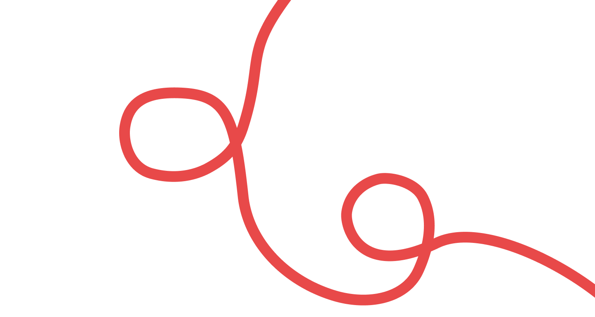

Fira Code создал Никита
Прокопов в 2014 году
Прокопов в 2014 году

НАЧЕРТАНИЯ
В нашей лапше-рамэн спрятаны все начертания Fira Code: лёгкий Light,
сытный Regular, насыщенный Medium и мощный Bold

СОСТАВ
Шрифт создавался на основе шрифта Fira Mono
г г г г г г г
а а а а а а
с с с с с с с
о о о о о о о о
б
л
ю
х
ЦИФРЫ
Цифры в Fira Code выглядят как пузырьки рамунэ: ровные, аккуратные и
одинакового размера. Каждый «пузырёк» сохраняет свою форму в любом
начертании — от лёгкого Light до насыщенного Bold.

ЛИГАТУРЫ
В наших онигири есть «секретные ингредиенты» — лигатуры
С шрифтом Fira Code онигири склеиваются в аккуратные
«начинки-лигатуры», и каждый кусочек становится красивым и удобным для
чтения

ЯЗЫКИ
Попробуй вкусный шрифт
на любом языке
на любом языке
русский
қазақша
более 60+
english
türk
L
l
M
m

АКЦЕНТЫ
Брусковая засечка
Поднятая середина

ГЛИФЫ
У Fira Code целая коллекция глифов — буквы, цифры, знаки пунктуации,
математические символы и лигатуры. Всего их более 2000, так что шрифт
поддерживает не только латиницу, но и множество спецсимволов
&
^
@
::
¿
#
*
[*]
¿
£
^

СПАСИБО
ЗА ПОКУПКУ!
ЗА ПОКУПКУ!
Гость:
Группа:
Куратор:
Потава Елизавета
Б25ДЗ10
Камила Рихтер
Приятного аппетита)